Tree-Based Models
UQ SLC Digital Team
2019-07-09

1 Conditional Inference Trees
This section deals with tree-structure models, the most basic type is a conditional inference tree. Like random forests, conditional inference trees are non-parametric and thus do not rely on distributional requirements. In addition, tree-structure models are very useful because they can deal with different types of variables. Tree-structure models are particularly interesting for linguists because they can handle moderate sample sizes and many high-order interactions better then regression models. The tree structure represents recursive partitioning of the data to minimize residual deviance.
Before we implement a conditional inference tree in R, we will have a look at how it works. We will do this in more detail here as random forests and Boruta anlyses are extensions of conditional inference trees and are therefore based on the same concepts.
Below is a conditional inference tree of the iris-data set. All conditional inference trees answer a simple question, namely “How do we classify elements based on the given predictors?”. The answer that conditional inference trees provide is the classification of the elements based on the levels of the predictors. If predictors are not significant or all elements can be classified correctly without them (i.e. if these predictors are unneccessary), then they are not included in the decision tree. The conditional inference tree shows that the best predictor for discourse like use is age as it is the highest node. Among young speakers, those with high status use like more compared with speakers of lower social status. Among old speakers, women use discourse like more than men.
library(partykit) # activate partykit library
library(dplyr) # activate dplyr library
options(stringsAsFactors = T) # set options: do not convert strings
citdata <- read.delim("https://slcladal.github.io/data/treedata.txt", header = T, sep = "\t")
set.seed(111) # set.seed
# apply bonferroni correction (1 minus alpha multiplied by n of predictors)
control = ctree_control(mincriterion = 1-(.05*ncol(citdata)-1))
# create initial conditional inference tree model
citd.ctree <- ctree(LikeUser ~ Age + Gender + Status,
data = citdata)
plot(citd.ctree, gp = gpar(fontsize = 8)) # plot final ctree
Before going through how this conditional decision tree is generated, let us first go over some basic concepts. The top of the decision tree is called “root” or “root node”, the categories at the end of branches are called “leaves” or “leaf nodes”. Nodes that are in-between the root and leaves are called “internal nodes” or just “nodes”. The root node has only arrows or lines pointing away from it, internal nodes have lines going to and from them, while leaf nodes only have lines pointing towards them.
Let us now go over the process by which the decision tree above is generated. In our example, we want to predict whether a person makes use of discourse like given their age, gender, and social status. The first six lines of this ficticious data set are displayed in the table below:
| Age | Gender | Status | LikeUser |
|---|---|---|---|
| 15-40 | female | high | no |
| 15-40 | female | high | no |
| 15-40 | male | high | no |
| 41-80 | female | low | yes |
| 41-80 | male | high | no |
| 41-80 | male | low | no |
In a first step, we initialize our R session by activating relevant libraries, setting options and setting a seed. Then, we load the data into R.
library(partykit) # activate partykit library
library(dplyr) # activate dplyr library
options(stringsAsFactors = T) # set options: do not convert strings
set.seed(111) # set.seed
citdata <- read.delim("https://slcladal.github.io/data/treedata.txt", header = T, sep = "\t")After initializing the R session, it needs to be determined, what the root of the decision tree should be. This means that we have to determine which of the variables represents the root node. In order to do so, we tabulate for each variable level, how many speakers of that level have used discourse like (LikeUsers) and how many have not used discourse like (NonLikeUsers).
# tabulate data
table(citdata$LikeUser, citdata$Gender)##
## female male
## no 43 75
## yes 91 42table(citdata$LikeUser, citdata$Age)##
## 15-40 41-80
## no 34 84
## yes 92 41table(citdata$LikeUser, citdata$Status)##
## high low
## no 33 85
## yes 73 60None of the predictors is perfect (the perdictors are therefore refered to as “impure”). To determine which variable is the root, we will caluculate the degree of “impurity” for each variable - the variable which has the lowest impurity value will be the root.
The most common measure of impurity in the conext of conditional inference trees is called “Gini”. For each level we apply the following equation to determine the impuruty value:
\[\begin{equation} G_{x} = 1 - ( p_{1} )^{2} - ( p_{0} )^{2} \end{equation}\]For the node for men, this would mean the following:
\[\begin{equation} G_{men} = 1-(\frac{42} {42+75})^{2} - (\frac{75} {42+75})^{2} = 0.4602235 \end{equation}\]For women, we caculate G or Gini as follows:
\[\begin{equation} G_{women} = 1-(\frac{91} {91+43})^{2} - (\frac{43} {91+43})^{2} = 0.4358432 \end{equation}\]To calculate the Gini value of Gender, we need to calculate the weighted average leaf node impurity (weighted because the number of speakers is different in each group). We calculate the weighted avergage leaf node impurity using the forluar below.
\[\begin{equation} G_{Gender} = \frac{N_{men}} {N_{Total}} \times G_{men} + \frac{N_{women}} {N_{Total}} \times G_{women} G_{Gender} = \frac{159} {303} \times 0.4602235 + \frac{144} {303} \times 0.4358432 = 0.4611915 \end{equation}\]In R, we would do the calculations like below.
# Gini: men
gini_men <- 1-(42/(42+75))^2 - (75/(42+75))^2
# Gini: women
gini_women <- 1-(91/(91+43))^2 - (43/(91+43))^2
# Weighted Average of Gini: Gender
gini_gender <- 42/(42+75)* gini_men + 91/(91+43) * gini_women
gini_gender## [1] 0.4611915We would now have to calculate the Gini values for all predictors in our data set. See below for the how to perform the calculations in R:
gini_young <- 1-(92/(92+34))^2 - (34/(92+34))^2 # Gini: young
gini_old <- 1-(41/(41+84))^2 - (84/(41+84))^2 # Gini: old
# Weighted Average of Gini: Gender
gini_age <- 92/(92+34)* gini_young + 41/(41+84) * gini_old
gini_age## [1] 0.4323148### Status
gini_high <- 1-(73/(33+73))^2 - (33/(33+73))^2 # Gini: high
gini_low <- 1-(60/(60+85))^2 - (85/(60+85))^2 # Gini: low
# Weighted Average of Gini: Status
gini_status <- 73/(33+73)* gini_high + 60/(60+85) * gini_low
gini_status## [1] 0.4960521Age has the lowest Gini impurity value and therefore separates LikeUsers from NonLikeUsers better than Gender or Social Status. Therefore, age will be the root of our tree.

In a next step, we need to find out which of the remaining variables best separates the speakers who use discourse like from those that do not under the first node. In order to do so, we calculate the Gini values for Gender and SocialStatus for the “15-40” node.
### 2nd node: gender
young <- citdata[citdata$Age == "15-40",]
tbyounggender <- table(young$LikeUser, young$Gender)
tbyounggender##
## female male
## no 17 17
## yes 58 34# Gini: men
gini_youngmen <- 1-(tbyounggender[2,2]/sum(tbyounggender[,2]))^2 - (tbyounggender[1,2]/sum(tbyounggender[,2]))^2
# Gini: women
gini_youngwomen <- 1-(tbyounggender[2,1]/sum(tbyounggender[,1]))^2 - (tbyounggender[1,1]/sum(tbyounggender[,1]))^2
# Weighted Average of Gini: Gender
gini_younggender <- sum(tbyounggender[,2])/sum(tbyounggender)* gini_youngmen + sum(tbyounggender[,1])/sum(tbyounggender) * gini_youngwomen
gini_younggender## [1] 0.3885714### 2nd node: status
young <- citdata[citdata$Age == "15-40",]
tbyoungstatus <- table(young$LikeUser, young$Status)
tbyoungstatus##
## high low
## no 11 23
## yes 57 35# Gini: low
gini_younglow <- 1-(tbyoungstatus[2,2]/sum(tbyoungstatus[,2]))^2 - (tbyoungstatus[1,2]/sum(tbyoungstatus[,2]))^2
# Gini: high
gini_younghigh <- 1-(tbyoungstatus[2,1]/sum(tbyoungstatus[,1]))^2 - (tbyoungstatus[1,1]/sum(tbyoungstatus[,1]))^2
# Weighted Average of Gini: Gender
gini_youngstatus <- sum(tbyoungstatus[,2])/sum(tbyoungstatus)* gini_younglow + sum(tbyoungstatus[,1])/sum(tbyoungstatus) * gini_younghigh
gini_youngstatus## [1] 0.3666651As “Status” has a lower Gini value, we have determined “Status” as the next split. Next, we check whether we need to include another split by “Gender”.
### 3nd node: gender
younghigh <- citdata %>%
filter(Age == "15-40") %>%
filter(Status == "high")
tbyounghighgender <- table(younghigh$LikeUser, younghigh$Gender)
tbyounghighgender##
## female male
## no 4 7
## yes 37 20# Gini: men
gini_younghighmen <- 1-(tbyounghighgender[2,2]/sum(tbyounghighgender[,2]))^2 - (tbyounghighgender[1,2]/sum(tbyounghighgender[,2]))^2
# Gini: women
gini_younghighwomen <- 1-(tbyounghighgender[2,1]/sum(tbyounghighgender[,1]))^2 - (tbyounghighgender[1,1]/sum(tbyounghighgender[,1]))^2
# Weighted Average of Gini: Gender
gini_younghighgender <- sum(tbyounghighgender[,2])/sum(tbyounghighgender)* gini_younghighmen + sum(tbyounghighgender[,1])/sum(tbyounghighgender) * gini_younghighwomen
gini_younghighgender## [1] 0.2586747# compare with younghigh
gini_younghigh## [1] 0.2711938Because the Gini value of Status:high among young speakers is lower than the Gini value that results if we include “Gender”, we do not include another split. This means that the left branch is finished.
Now, we focus on the right branch. Again, we determine whether to include a split for “Gender” or for “Status”. As a first step, we calculate the Gini value for “Gender.
### 3rd node: gender
old <- citdata[citdata$Age == "41-80",]
tboldgender <- table(old$LikeUser, old$Gender)
tboldgender##
## female male
## no 26 58
## yes 33 8# Gini: men
gini_oldmen <- 1-(tboldgender[2,2]/sum(tboldgender[,2]))^2 - (tboldgender[1,2]/sum(tboldgender[,2]))^2
# Gini: women
gini_oldwomen <- 1-(tboldgender[2,1]/sum(tboldgender[,1]))^2 - (tboldgender[2,1]/sum(tboldgender[,1]))^2
# Weighted Average of Gini: Gender
gini_oldgender <- sum(tboldgender[,2])/sum(tboldgender)* gini_oldmen + sum(tboldgender[,1])/sum(tboldgender) * gini_oldwomen
gini_oldgender## [1] 0.2891628Now, we calclate the Gini value for Status.
### 3rd node: status
tboldstatus <- table(old$LikeUser, old$Status)
tboldstatus##
## high low
## no 22 62
## yes 16 25# Gini: low
gini_oldlow <- 1-(tboldstatus[2,2]/sum(tboldstatus[,2]))^2 - (tboldstatus[2,1]/sum(tboldstatus[,2]))^2
# Gini: high
gini_oldhigh <- 1-(tboldstatus[2,1]/sum(tboldstatus[,1]))^2 - (tboldstatus[2,1]/sum(tboldstatus[,1]))^2
# Weighted Average of Gini: Gender
gini_oldstatus <- sum(tboldstatus[,2])/sum(tboldstatus)* gini_oldlow + sum(tboldstatus[,1])/sum(tboldstatus) * gini_oldhigh
gini_oldstatus## [1] 0.811199# compare with gini gender
gini_oldgender## [1] 0.2891628Since the Gini value for “Gender” is lower, we include a “Gender” node.
Now, we determine, wehther we also need to include a split for “Status”.
### 3nd node: gender
oldfemale <- citdata %>%
filter(Age == "41-80") %>%
filter(Gender == "female")
tboldfemalestatus <- table(oldfemale$LikeUser, oldfemale$Status)
tboldfemalestatus##
## high low
## no 5 21
## yes 11 22# Gini: low
gini_oldfemalelow <- 1-(tboldfemalestatus[2,2]/sum(tboldfemalestatus[,2]))^2 - (tboldfemalestatus[1,2]/sum(tboldfemalestatus[,2]))^2
# Gini: high
gini_oldfemalehigh <- 1-(tboldfemalestatus[2,1]/sum(tboldfemalestatus[,1]))^2 - (tboldfemalestatus[1,1]/sum(tboldfemalestatus[,1]))^2
# Weighted Average of Gini: Status
gini_oldgenderstatus <- sum(tboldfemalestatus[,2])/sum(tboldfemalestatus)* gini_oldfemalelow + sum(tboldfemalestatus[,1])/sum(tboldfemalestatus) * gini_oldfemalehigh
gini_oldgenderstatus # gini of status for old plus female## [1] 0.4807351gini_oldgender # compare with younghigh## [1] 0.2891628Because the Gini value for Status is higher than the value for Gender, we do not include another split. This means that our conditional inference tree is finished.
Below you see, how to implement a conditional inference tree in R. First, we prepare the session by activating the libraries that we will need (and installing them in case we have not done so before). Then, we set the options and read in the data.
#install.packages(Rling) # install Rling library (remove # to activate)
library(Rling) # activate Rling library
library(partykit) # activate partykit library
library(dplyr) # activate dplyr library
options(stringsAsFactors = T) # set options: do not convert strings
options(scipen = 999) # set options: supress math. notation
options(max.prAmplified=10000) # set options
# load data
citdata <- read.delim("data/treedata.txt", header = T, sep = "\t")
head(citdata)## Age Gender Status LikeUser
## 1 15-40 female high no
## 2 15-40 female high no
## 3 15-40 male high no
## 4 41-80 female low yes
## 5 41-80 male high no
## 6 41-80 male low noset.seed(111) # set.seed
# apply bonferroni correction (1 minus alpha multiplied by n of predictors)
control = ctree_control(mincriterion = 1-(.05*ncol(citdata)-1))
# create initial conditional inference tree model
citd.ctree <- ctree(LikeUser ~ Age + Gender + Status,
data = citdata)
plot(citd.ctree, gp = gpar(fontsize = 8)) # plot final ctree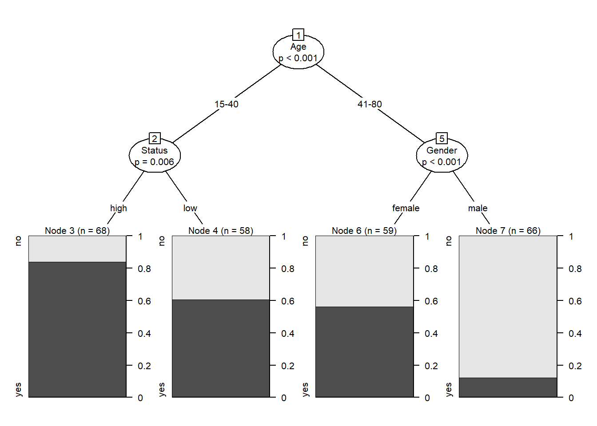
In addition to simply plotting the conditional inference tree, we can also check its accuracy. In a first step, we calculate the percentage of correct predictions made by our tree.
# test prediction accuracy
ptb <- table(predict(citd.ctree), citdata$LikeUser)
(((ptb[1]+ptb[4])+(ptb[2]+ptb[3]))/sum(table(predict(citd.ctree), citdata$LikeUser)))*100## [1] 100Next, we calculate the baseline accuracy, so see how much better the conditional decision tree performs compared with a chance distribution.
# determine baseline
(table(citdata$LikeUser)[[2]]/sum(table(citdata$LikeUser)))*100## [1] 52.988051.1 Splitting numeric, ordinal, and true categorical variables
While it is rather straight forward to calculate the Gini values for categorical variables, it may not seem quite as apparent how to calculate splits for numeric or ordinal variables. To illustrate how the algorithm works on such variables, consider the example data set shown below.
| Age | LikeUser |
|---|---|
| 15 | yes |
| 37 | no |
| 63 | no |
| 42 | yes |
| 22 | yes |
| 27 | yes |
In a first step, we order the numeric variable so that we arrive at the follwoing table.
| Age | LikeUser |
|---|---|
| 15 | yes |
| 22 | yes |
| 27 | yes |
| 37 | no |
| 42 | yes |
| 63 | no |
Next, we calculate the means for each level of “Age”.
| Age | LikeUser |
|---|---|
| 15.0 | yes |
| 18.5 | |
| 22.0 | yes |
| 24.5 | |
| 27.0 | yes |
| 32.0 | |
| 37.0 | no |
| 39.5 | |
| 42.0 | yes |
| 52.5 | |
| 63.0 | no |
Now, we calculate the Gini values for each average level of age.
\[\begin{equation} G_{x} = 1 - ( p_{1} )^{2} - ( p_{0} )^{2} \end{equation}\]For an age smaller than 18.5 this would mean:
\[\begin{equation} G_{youngerthan18.5} = 1-(\frac{1} {1+0})^{2} - (\frac{0} {1+0})^{2} = 0.0 \end{equation}\]For an age greater than 18.5, we caculate G or Gini as follows:
\[\begin{equation} G_{olerthan18.5} = 1-(\frac{2} {2+3})^{2} - (\frac{3} {2+3})^{2} = 0.48 \end{equation}\]Now, we calculate the Gini for that split as we have done above.
\[\begin{equation} G_{split18.5} = \frac{N_{youngerthan18.5}} {N_{Total}} \times G_{youngerthan18.5} + \frac{N_{olderthan18.5}} {N_{Total}} \times G_{olderthan18.5} G_{split18.5} = \frac{1} {6} \times 0.0 + \frac{5} {6} \times 0.48 = 0.4 \end{equation}\]We now have to calculate the Gini values for all possible age splits which yields the follwoing results:
| AgeSplit | Gini |
|---|---|
| 18.5 | 0.400 |
| 24.5 | 0.500 |
| 32.0 | 0.444 |
| 39.5 | 0.410 |
| 52.5 | 0.267 |
The split at 52.5 years of age has the lowest Gini value. Accordingly, we would split the data between speakers who are younger than 52.5 and speakers who are older than 52.5 years of age. The lowest Gini value for any age split would also be the Gini value that would be compared to other variables.
The same procedure that we have used to determine potential splits for a numeric variable would apply to an ordinal variable with only two differences:
- The Gini values are calculated for the actual levels and not the means between variable levels.
- The Gini value is nor calculated for the lowest and highest level as the calculation of the Gini values is impissble for extreme values. Extreme levels can, therefore, not serve as a potential split locations.
When dealing with categorical variables with more than two levels, the situation is slightly more complex as we would also have to calculate the Gini values for combinations of variable levels. While the calculations are, in principle, analogous to the ones performed for binary of nominal categorical variables, we would also have to check if combinations would lead to improved splits. For instance, imagine we have a variable with categories “A”, “B”, and “C”. In such cases we would not only have to calculate the Gini scores for “A”, “B”, and “C” but also for “A plus B”, “A plus C”, and “B plus C”. Note that we ignore the combination “A plus B plus C” as this combination would include all other portential combinations.
1.2 Problems of Conditional Inference Trees
Conditional Inference Trees are very intuitive, multivariate, non-parametric, they do not reuire large datasets and they are easy to implement. However, they are prone to overfitting and do not perform well why they are applied to new data. An extension which remedies these problems is to grow many varied trees - this is called a Random Forest Analysis and will will have a look at how Random Forests work and how to implement them in R in the next section.
2 Random Forests
Random Forests are an extension of Conditional Inference Trees. Like Conditional Inference Trees, Random Forests represent a multivariate, non-parametric partitioning method that is particularly useful when dealing with relatively small sample sizes and many predictors (including interactions). Random Forests outperform CITs in that they are substantially less prone to overfitting and they perform much better when applied to new data.
Bootstrapped Data
Random Forests do not work on one-and-the-same data set (as CITs do) but in Random Forest analyses, many samples (with replacement) are drawn from the original data set. This generation of new data set based on an existing data set is called “bootstrapping”. Bootstrapping allows us to produce many trees based on variations of the original data set rather than dealing with only a single, fixed data set that would produce only a single tree. Therefore, because the data is different each time, the individual CITs are also different.
Imagine, we are dealing with a very small data set to which we want to apply a Random Forest Analysis. The original data set is displayed below.
| ID | Age | Gender | Status | LikeUser |
|---|---|---|---|---|
| 1 | 15-40 | female | high | no |
| 2 | 15-40 | female | high | no |
| 3 | 15-40 | male | high | no |
| 4 | 41-80 | female | low | yes |
| 5 | 41-80 | male | high | no |
| 6 | 41-80 | male | low | no |
We now draw a sample from this data set and receive the following data set.
| ID | Age | Gender | Status | LikeUser |
|---|---|---|---|---|
| 6 | 41-80 | male | low | no |
| 3 | 15-40 | male | high | no |
| 4 | 41-80 | female | low | yes |
| 1 | 15-40 | female | high | no |
| 2 | 15-40 | female | high | no |
| 2 | 15-40 | female | high | no |
As you can see, the bootstrapped data contains the second row twice while the fifth row is missing.
Out-Of-Bag data
Because the data is reshuffeled for every new tree, a part of the data (on average about 30%) remains unused fro a given tree. The dat that is not used is called Out-Of-Bag data or OOB. The OOB is importnat because the quality of teh overall performance of the random forest can be assessed by applying the resulting tree-model to the data that it was not fit to. The quality of that tree is then measured in the OOB error, which is the error rate of the respective tree if applied to the OOB data.
Random Variable Selection
Random Forests also differ from simple CITs in that at each step, not all possible variables are considered for a node, but only a subset. For example, we have a data set with five predicting independent variables and one dependent variable. When generating a CIT, all possible variables (variables that do not represent a node further up in the tree) are consiederd as splitting candidates. In Random Forests, only a fixed number (typically the square-root of the number of independent variables) are considered as candidates for a node. So at each potential split, a fixed number of randomly selected variables is considered potential node candidates.
2.1 Random Forests in R: Heart Disease
This section is adapted from https://statquest.org/2018/02/26/statquest-random-forests-in-r/. We start the procedure by activating the packages that we will need for the analysis.
library(ggplot2) # activate ggplot2 library for plotting
library(cowplot) # activate cowplot library for modifying ggplot2
library(randomForest) # activate randomForest library for random forestsThe data used in this demo comes from the UCI machine learning repository ( http://archive.ics.uci.edu/ml/index.php). Specifically, this is the heart disease data set ( http://archive.ics.uci.edu/ml/datasets/Heart+Disease).
# define path to data
url <- "http://archive.ics.uci.edu/ml/machine-learning-databases/heart-disease/processed.cleveland.data"
# load data
data <- read.csv(url, header=FALSE)
# inspect data
head(data) ## V1 V2 V3 V4 V5 V6 V7 V8 V9 V10 V11 V12 V13 V14
## 1 63 1 1 145 233 1 2 150 0 2.3 3 0.0 6.0 0
## 2 67 1 4 160 286 0 2 108 1 1.5 2 3.0 3.0 2
## 3 67 1 4 120 229 0 2 129 1 2.6 2 2.0 7.0 1
## 4 37 1 3 130 250 0 0 187 0 3.5 3 0.0 3.0 0
## 5 41 0 2 130 204 0 2 172 0 1.4 1 0.0 3.0 0
## 6 56 1 2 120 236 0 0 178 0 0.8 1 0.0 3.0 0Because the data does not have variable names, we have to add variable names manually. In additon, we need to rReformat the data so that it is easy to use and interpreted correctly by randomForest.
colnames(data) <- c(
"age",
"sex",# 0 = female, 1 = male
"cp", # chest pain
# 1 = typical angina,
# 2 = atypical angina,
# 3 = non-anginal pain,
# 4 = asymptomatic
"trestbps", # resting blood pressure (in mm Hg)
"chol", # serum cholestoral in mg/dl
"fbs", # fasting blood sugar greater than 120 mg/dl, 1 = TRUE, 0 = FALSE
"restecg", # resting electrocardiographic results
# 1 = normal
# 2 = having ST-T wave abnormality
# 3 = showing probable or definite left ventricular hypertrophy
"thalach", # maximum heart rate achieved
"exang", # exercise induced angina, 1 = yes, 0 = no
"oldpeak", # ST depression induced by exercise relative to rest
"slope", # the slope of the peak exercise ST segment
# 1 = upsloping
# 2 = flat
# 3 = downsloping
"ca", # number of major vessels (0-3) colored by fluoroscopy
"thal", # this is short of thalium heart scan
# 3 = normal (no cold spots)
# 6 = fixed defect (cold spots during rest and exercise)
# 7 = reversible defect (when cold spots only appear during exercise)
"hd" # (the predicted attribute) - diagnosis of heart disease
# 0 if less than or equal to 50% diameter narrowing
# 1 if greater than 50% diameter narrowing
)
head(data) # now we have data and column names## age sex cp trestbps chol fbs restecg thalach exang oldpeak slope ca
## 1 63 1 1 145 233 1 2 150 0 2.3 3 0.0
## 2 67 1 4 160 286 0 2 108 1 1.5 2 3.0
## 3 67 1 4 120 229 0 2 129 1 2.6 2 2.0
## 4 37 1 3 130 250 0 0 187 0 3.5 3 0.0
## 5 41 0 2 130 204 0 2 172 0 1.4 1 0.0
## 6 56 1 2 120 236 0 0 178 0 0.8 1 0.0
## thal hd
## 1 6.0 0
## 2 3.0 2
## 3 7.0 1
## 4 3.0 0
## 5 3.0 0
## 6 3.0 0str(data) ## 'data.frame': 303 obs. of 14 variables:
## $ age : num 63 67 67 37 41 56 62 57 63 53 ...
## $ sex : num 1 1 1 1 0 1 0 0 1 1 ...
## $ cp : num 1 4 4 3 2 2 4 4 4 4 ...
## $ trestbps: num 145 160 120 130 130 120 140 120 130 140 ...
## $ chol : num 233 286 229 250 204 236 268 354 254 203 ...
## $ fbs : num 1 0 0 0 0 0 0 0 0 1 ...
## $ restecg : num 2 2 2 0 2 0 2 0 2 2 ...
## $ thalach : num 150 108 129 187 172 178 160 163 147 155 ...
## $ exang : num 0 1 1 0 0 0 0 1 0 1 ...
## $ oldpeak : num 2.3 1.5 2.6 3.5 1.4 0.8 3.6 0.6 1.4 3.1 ...
## $ slope : num 3 2 2 3 1 1 3 1 2 3 ...
## $ ca : Factor w/ 5 levels "?","0.0","1.0",..: 2 5 4 2 2 2 4 2 3 2 ...
## $ thal : Factor w/ 4 levels "?","3.0","6.0",..: 3 2 4 2 2 2 2 2 4 4 ...
## $ hd : int 0 2 1 0 0 0 3 0 2 1 ...This shows that we need to tell R which columns contain factors and it also shows us that there are some missing values For example, there are “?”s in the dataset. First, replace “?”s with NAs. And then, we add factors for variables that are factors and clean up the factors that had missing data…
data[data == "?"] <- NA
data[data$sex == 0,]$sex <- "F"
data[data$sex == 1,]$sex <- "M"
data$sex <- as.factor(data$sex)
data$cp <- as.factor(data$cp)
data$fbs <- as.factor(data$fbs)
data$restecg <- as.factor(data$restecg)
data$exang <- as.factor(data$exang)
data$slope <- as.factor(data$slope)
data$ca <- as.integer(data$ca) Since “ca” had “?”s in it (which we have since converted to NAs) R thinks that the levels for the factor are strings, but we know they are integers, so we’ll first convert the strings to integiers…
data$ca <- as.factor(data$ca) # ...then convert the integers to factor levels
data$thal <- as.integer(data$thal) # "thal" also had "?"s in it.
data$thal <- as.factor(data$thal)
data$hd <- ifelse(test=data$hd == 0, yes="Healthy", no="Unhealthy")
data$hd <- as.factor(data$hd) # Now convert to a factor
str(data) ## 'data.frame': 303 obs. of 14 variables:
## $ age : num 63 67 67 37 41 56 62 57 63 53 ...
## $ sex : Factor w/ 2 levels "F","M": 2 2 2 2 1 2 1 1 2 2 ...
## $ cp : Factor w/ 4 levels "1","2","3","4": 1 4 4 3 2 2 4 4 4 4 ...
## $ trestbps: num 145 160 120 130 130 120 140 120 130 140 ...
## $ chol : num 233 286 229 250 204 236 268 354 254 203 ...
## $ fbs : Factor w/ 2 levels "0","1": 2 1 1 1 1 1 1 1 1 2 ...
## $ restecg : Factor w/ 3 levels "0","1","2": 3 3 3 1 3 1 3 1 3 3 ...
## $ thalach : num 150 108 129 187 172 178 160 163 147 155 ...
## $ exang : Factor w/ 2 levels "0","1": 1 2 2 1 1 1 1 2 1 2 ...
## $ oldpeak : num 2.3 1.5 2.6 3.5 1.4 0.8 3.6 0.6 1.4 3.1 ...
## $ slope : Factor w/ 3 levels "1","2","3": 3 2 2 3 1 1 3 1 2 3 ...
## $ ca : Factor w/ 4 levels "2","3","4","5": 1 4 3 1 1 1 3 1 2 1 ...
## $ thal : Factor w/ 3 levels "2","3","4": 2 1 3 1 1 1 1 1 3 3 ...
## $ hd : Factor w/ 2 levels "Healthy","Unhealthy": 1 2 2 1 1 1 2 1 2 2 ...This shows that the correct columns are factors and we’ve replaced “?”s with NAs because “?” no longer appears in the list of factors for “ca” and “thal”.
Note that for most machine learning methods, you need to divide the data manually into a “training” set and a “test” set. This allows you to train the method using the training data, and then test it on data it was not originally trained on.
In contrast, Random Forests split the data into “training” and “test” sets for you. This is because Random Forests use bootstrapped data, and thus, not every sample is used to build every tree. The “training” dataset is the bootstrapped data and the “test” dataset is the remaining samples. The remaining samples are called the “Out-Of-Bag” (OOB) data.
set.seed(42)
## impute any missing values in the training set using proximities
data.imputed <- rfImpute(hd ~ ., data = data, iter=6)## ntree OOB 1 2
## 300: 17.49% 12.80% 23.02%
## ntree OOB 1 2
## 300: 16.83% 14.02% 20.14%
## ntree OOB 1 2
## 300: 17.82% 13.41% 23.02%
## ntree OOB 1 2
## 300: 17.49% 14.02% 21.58%
## ntree OOB 1 2
## 300: 17.16% 12.80% 22.30%
## ntree OOB 1 2
## 300: 18.15% 14.63% 22.30%The argument “iter” refers to the number of iterations to run. Breiman says 4 to 6 iterations is usually good enough. With this dataset, when we set iter=6, OOB-error bounces around between 17% and 18%. When we set iter=20, we get values a little better and a little worse, so doing more iterations doesn’t improve the situation.
Also, if you really want to micromanage how rfImpute(), you can change the number of trees it makes (the default is 300) and the number of variables that it will consider at each step.
Now we are ready to build a random forest. If the thing we’re trying to predict (in this case it is whether or not someone has heart disease) is a continuous number (i.e. “weight” or “height”), then by default, randomForest() will set “mtry”, the number of variables to consider at each step, to the total number of variables divided by 3 (rounded down), or to 1 (if the division results in a value less than 1). If the thing we’re trying to predict is a “factor” (i.e. either “yes/no” or “ranked”), then randomForest() will set mtry to the square root of the number of variables (rounded down to the next integer value).
In this example, “hd”, the thing we are trying to predict, is a factor and there are 13 variables. So by default, randomForest() will set mtry = sqrt(13) = 3.6 rounded down = 3. Also, by default random forest generates 500 trees (NOTE: rfImpute() only generates 300 tress by default)
model <- randomForest(hd ~ ., data=data.imputed, proximity=TRUE)
model ##
## Call:
## randomForest(formula = hd ~ ., data = data.imputed, proximity = TRUE)
## Type of random forest: classification
## Number of trees: 500
## No. of variables tried at each split: 3
##
## OOB estimate of error rate: 16.83%
## Confusion matrix:
## Healthy Unhealthy class.error
## Healthy 142 22 0.1341463
## Unhealthy 29 110 0.2086331The model gives us an overview of the call, along with the OOB error rate for the forest with ntree trees (in this case ntree=500 by default). In additon, the output provides a confusion matrix for the forest with ntree trees. The confusion matrix is laid out like this:
| Healthy | Unhealthy | |
| Healthy | Number of healthy people correctly called healthy by the forest. | Number of healthy people incorectly called unhealthy by the forest |
| Unhealthy | Number of unhealthy people incorrectly called healthy by the forest | Number of unhealthy people correctly called unhealthy by the forest |
Now, we check to see if the random forest is actually big enough… Up to a point, the more trees in the forest, the better. You can tell when you’ve made enough when the OOB no longer improves.
oob.error.data <- data.frame(
Trees=rep(1:nrow(model$err.rate), times=3),
Type=rep(c("OOB", "Healthy", "Unhealthy"), each=nrow(model$err.rate)),
Error=c(model$err.rate[,"OOB"],
model$err.rate[,"Healthy"],
model$err.rate[,"Unhealthy"]))
ggplot(data=oob.error.data, aes(x=Trees, y=Error)) +
geom_line(aes(color=Type))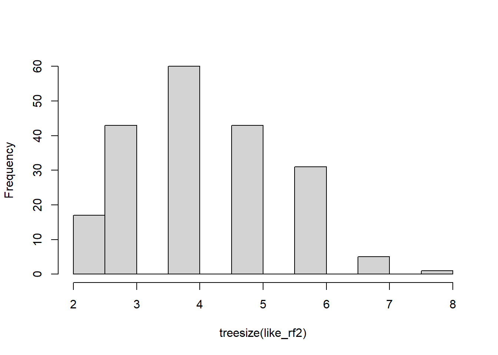
# ggsave("oob_error_rate_500_trees.pdf")The blue line shows the error rate specifically for calling “Unheathly” patients that are OOB. The green line shows the overall OOB error rate. The red line shows the error rate specifically for calling “Healthy” patients that are OOB.
After building a random forest with 500 tress, the graph does not make it clear that the OOB-error has settled on a value or, if we added more trees, it would continue to decrease. So we do the whole thing again, but this time add more trees.
model <- randomForest(hd ~ ., data=data.imputed, ntree=1000, proximity=TRUE)
model##
## Call:
## randomForest(formula = hd ~ ., data = data.imputed, ntree = 1000, proximity = TRUE)
## Type of random forest: classification
## Number of trees: 1000
## No. of variables tried at each split: 3
##
## OOB estimate of error rate: 17.16%
## Confusion matrix:
## Healthy Unhealthy class.error
## Healthy 141 23 0.1402439
## Unhealthy 29 110 0.2086331oob.error.data <- data.frame(
Trees=rep(1:nrow(model$err.rate), times=3),
Type=rep(c("OOB", "Healthy", "Unhealthy"), each=nrow(model$err.rate)),
Error=c(model$err.rate[,"OOB"],
model$err.rate[,"Healthy"],
model$err.rate[,"Unhealthy"]))
ggplot(data=oob.error.data, aes(x=Trees, y=Error)) +
geom_line(aes(color=Type))# ggsave("oob_error_rate_1000_trees.pdf")After building a random forest with 1,000 trees, we get the same OOB-error 16.5% and we can see convergence in the graph. So we could have gotten away with only 500 trees, but we wouldn’t have been sure that number was enough.
If we want to compare this random forest to others with different values for mtry (to control how many variables are considered at each step)…
oob.values <- vector(length=10)
for(i in 1:10) {
temp.model <- randomForest(hd ~ ., data=data.imputed, mtry=i, ntree=1000)
oob.values[i] <- temp.model$err.rate[nrow(temp.model$err.rate),1]
}
oob.values## [1] 0.1749175 0.1782178 0.1716172 0.1782178 0.1683168 0.1881188 0.1815182
## [8] 0.1980198 0.1782178 0.1848185The lowest value is when mtry=3, so the default setting was the best. Now let’s create an MDS-plot to show how the samples are related to each other.
Start by converting the proximity matrix into a distance matrix.
distance.matrix <- dist(1-model$proximity)
mds.stuff <- cmdscale(distance.matrix, eig=TRUE, x.ret=TRUE)
## calculate the percentage of variation that each MDS axis accounts for...
mds.var.per <- round(mds.stuff$eig/sum(mds.stuff$eig)*100, 1)
## now make a fancy looking plot that shows the MDS axes and the variation:
mds.values <- mds.stuff$points
mds.data <- data.frame(Sample=rownames(mds.values),
X=mds.values[,1],
Y=mds.values[,2],
Status=data.imputed$hd)
ggplot(data=mds.data, aes(x=X, y=Y, label=Sample)) +
geom_text(aes(color=Status)) +
theme_bw() +
xlab(paste("MDS1 - ", mds.var.per[1], "%", sep="")) +
ylab(paste("MDS2 - ", mds.var.per[2], "%", sep="")) +
ggtitle("MDS plot using (1 - Random Forest Proximities)")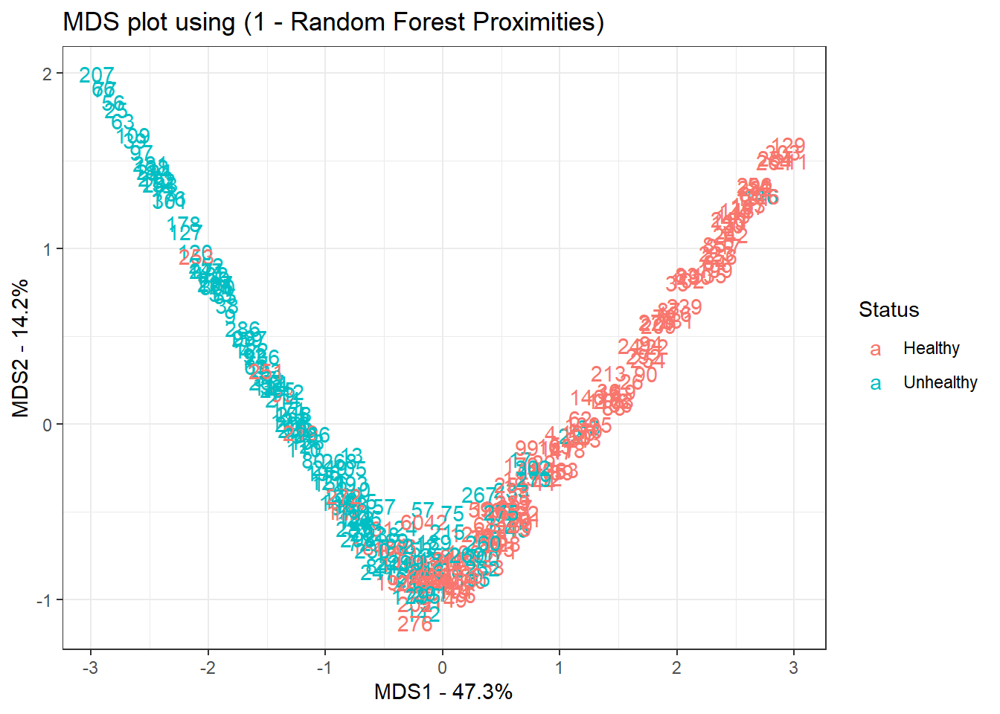
As a final step, we plot the effect sizes of the variables as the mean of decrease in Gini values.
varImpPlot(model, main = "", pch = 20) 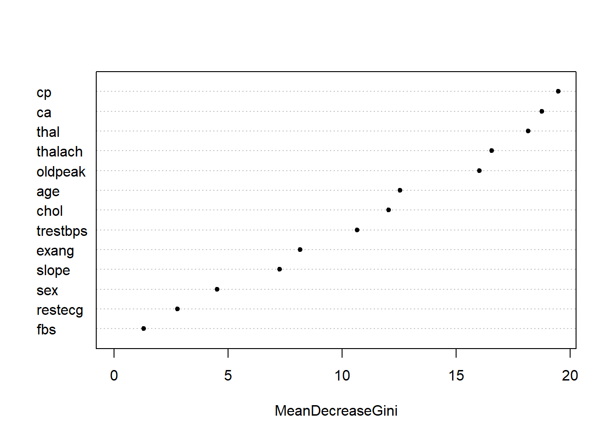
2.2 Random Forests in R: Really
We now use a similar but slightly more elaborate method of going through a random forest analysis. Again, we start the procedure by activating libraries that we will need and by loading the data and setting a seed. A seed allows us to replicate this analysis.
library(knitr) # activate knitr library
library(dplyr) # activate dplyr library
library(randomForest) # activate randomForest library
rfd <- read.delim("data/treedata.txt", header = T, sep = "\t")
set.seed(222) # set seedAfter the data preparation, we can now start with the random forest analysis and, in a first step, we partition the data in order to be able to evaluate the precision of the random forest model later on. We partition the data into a training and a test set.
id <- sample(2, nrow(rfd), replace = T, prob = c(.7, .3))
train <- rfd[id == 1, ]
test <- rfd[id == 2,]We now create an initial random forest model and inspect its parameters.
like_rf1 <- randomForest(LikeUser~., data = train)
print(like_rf1) # inspect model##
## Call:
## randomForest(formula = LikeUser ~ ., data = train)
## Type of random forest: classification
## Number of trees: 500
## No. of variables tried at each split: 1
##
## OOB estimate of error rate: 27.59%
## Confusion matrix:
## no yes class.error
## no 40 37 0.4805195
## yes 11 86 0.1134021We can also inspect attibutes of the random forest model.
attributes(like_rf1)## $names
## [1] "call" "type" "predicted"
## [4] "err.rate" "confusion" "votes"
## [7] "oob.times" "classes" "importance"
## [10] "importanceSD" "localImportance" "proximity"
## [13] "ntree" "mtry" "forest"
## [16] "y" "test" "inbag"
## [19] "terms"
##
## $class
## [1] "randomForest.formula" "randomForest"After running an initial random forest model, we will now start with the model evaluation. To evaluate the model, we will have to load additional libraries.
# install package
#source("https://bioconductor.org/biocLite.R"); biocLite(); library(Biobase)
#install.packages("Biobase", repos=c("http://rstudio.org/_packages", "http://cran.rstudio.com",
# "http://cran.rstudio.com/", dependencies=TRUE))
#install.packages("dimRed", dependencies = TRUE)
#install.packages('caret', dependencies = TRUE)
# load caret library
library(caret) # because initially caret did not work, the libraries above had to be installed
ptrain1 <- predict(like_rf1, train) # extract prediction for training data
head(ptrain1); head(train$LikeUser) # inspect predictions## 2 3 4 7 8 9
## yes yes yes yes yes no
## Levels: no yes## [1] no no yes yes no no
## Levels: no yesNow, we generate a confusion matrix for the training data, extract the prediction for test data, and create confusion matrix for the test data.
confusionMatrix(ptrain1, train$LikeUser) ## Confusion Matrix and Statistics
##
## Reference
## Prediction no yes
## no 40 4
## yes 37 93
##
## Accuracy : 0.7644
## 95% CI : (0.6942, 0.8253)
## No Information Rate : 0.5575
## P-Value [Acc > NIR] : 0.00000001119
##
## Kappa : 0.5004
## Mcnemar's Test P-Value : 0.00000058060
##
## Sensitivity : 0.5195
## Specificity : 0.9588
## Pos Pred Value : 0.9091
## Neg Pred Value : 0.7154
## Prevalence : 0.4425
## Detection Rate : 0.2299
## Detection Prevalence : 0.2529
## Balanced Accuracy : 0.7391
##
## 'Positive' Class : no
## ptest1 <- predict(like_rf1, test)
confusionMatrix(ptest1, test$LikeUser)## Confusion Matrix and Statistics
##
## Reference
## Prediction no yes
## no 18 4
## yes 23 32
##
## Accuracy : 0.6494
## 95% CI : (0.5322, 0.7547)
## No Information Rate : 0.5325
## P-Value [Acc > NIR] : 0.025323
##
## Kappa : 0.3177
## Mcnemar's Test P-Value : 0.000532
##
## Sensitivity : 0.4390
## Specificity : 0.8889
## Pos Pred Value : 0.8182
## Neg Pred Value : 0.5818
## Prevalence : 0.5325
## Detection Rate : 0.2338
## Detection Prevalence : 0.2857
## Balanced Accuracy : 0.6640
##
## 'Positive' Class : no
## Now, we determine error rate of random forest model.
plot(like_rf1, main = "")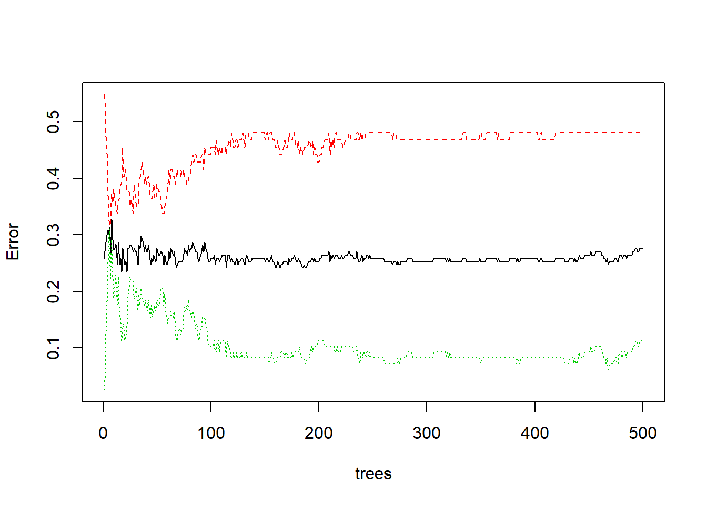
After going through the model evaluation, we can now tune the ransom forest model.
like_rf2 <- tuneRF(train[, !colnames(train)== "LikeUser"],
train[, colnames(train)== "LikeUser"],
stepFactor = 3, # for most values 3 appears to be optimal
plot = T,
ntreeTry = 200,
trace = T,
improve = .05
)## mtry = 1 OOB error = 25.86%
## Searching left ...
## Searching right ...
## mtry = 3 OOB error = 23.56%
## 0.08888889 0.05
Again, we create an improved model and inspect its properties.
like_rf2 <- randomForest(LikeUser~., data = train,
ntree = 200,
ntry = 6,
importance= T,
proximity = T)
print(like_rf2) # inspect model##
## Call:
## randomForest(formula = LikeUser ~ ., data = train, ntree = 200, ntry = 6, importance = T, proximity = T)
## Type of random forest: classification
## Number of trees: 200
## No. of variables tried at each split: 1
##
## OOB estimate of error rate: 24.14%
## Confusion matrix:
## no yes class.error
## no 40 37 0.48051948
## yes 5 92 0.05154639As before, we extract the predictions based on the improved model and create a confusion matrix.
ptrain2 <- predict(like_rf2, train)
confusionMatrix(ptrain2, train$LikeUser)## Confusion Matrix and Statistics
##
## Reference
## Prediction no yes
## no 40 4
## yes 37 93
##
## Accuracy : 0.7644
## 95% CI : (0.6942, 0.8253)
## No Information Rate : 0.5575
## P-Value [Acc > NIR] : 0.00000001119
##
## Kappa : 0.5004
## Mcnemar's Test P-Value : 0.00000058060
##
## Sensitivity : 0.5195
## Specificity : 0.9588
## Pos Pred Value : 0.9091
## Neg Pred Value : 0.7154
## Prevalence : 0.4425
## Detection Rate : 0.2299
## Detection Prevalence : 0.2529
## Balanced Accuracy : 0.7391
##
## 'Positive' Class : no
## We will now extract predictions for test data and create a confusion matrix.
ptest2 <- predict(like_rf2, test)
confusionMatrix(ptest2, test$LikeUser)## Confusion Matrix and Statistics
##
## Reference
## Prediction no yes
## no 18 4
## yes 23 32
##
## Accuracy : 0.6494
## 95% CI : (0.5322, 0.7547)
## No Information Rate : 0.5325
## P-Value [Acc > NIR] : 0.025323
##
## Kappa : 0.3177
## Mcnemar's Test P-Value : 0.000532
##
## Sensitivity : 0.4390
## Specificity : 0.8889
## Pos Pred Value : 0.8182
## Neg Pred Value : 0.5818
## Prevalence : 0.5325
## Detection Rate : 0.2338
## Detection Prevalence : 0.2857
## Balanced Accuracy : 0.6640
##
## 'Positive' Class : no
## Now, we inspect number of nodes per tree in the forest.
hist(treesize(like_rf2), main = "", col = "lightgray")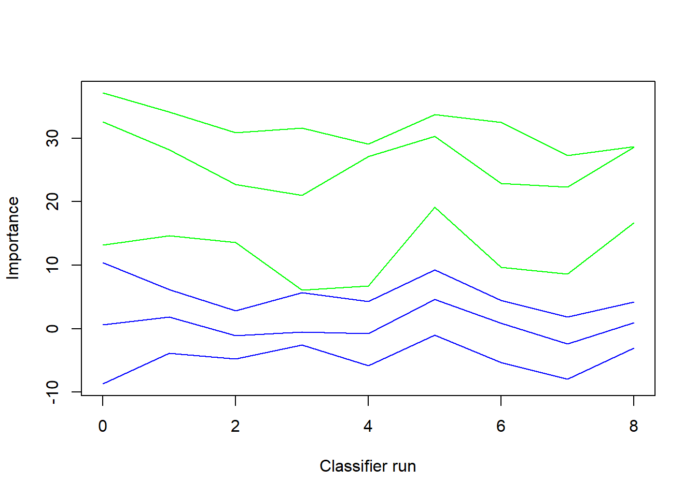
We now move on and determine the effect size by checking variable importance.
varImpPlot(like_rf2, main = "", pch = 20) 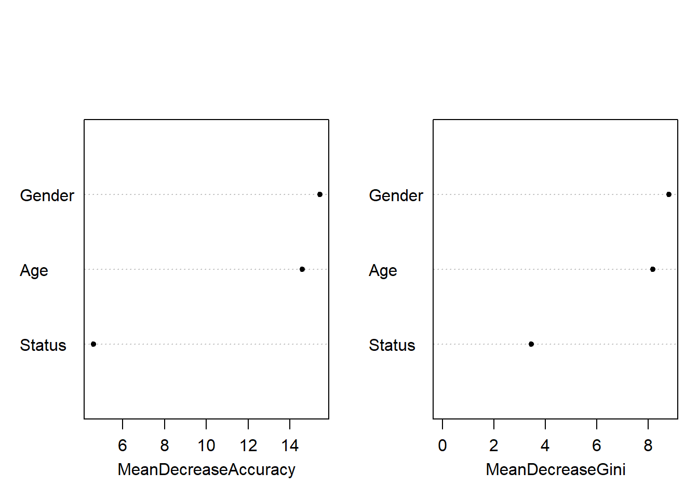
The left plot shows the accuracy. More precisely, it shows how much accuracy decreases if factor is left out. The right plot shows the impurity of the nodes of the model based on the predictors. In other words, it shows how much more unpure (ambiguous) the distributions become if factor is left out extract variable importance values.
importance(like_rf2)## no yes MeanDecreaseAccuracy MeanDecreaseGini
## Age 14.099255 12.421169 14.586045 8.184826
## Gender 14.606837 14.386844 15.423353 8.799358
## Status 4.539962 3.110163 4.601034 3.468382Which variables have been used in the trees?
varUsed(like_rf2)## [1] 215 217 215We can also show the effect size in partial dependence plots.
partialPlot(like_rf2, train, Age)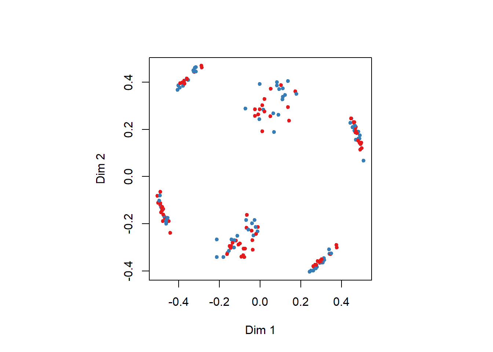
To extract a specific tree. we can use the following command.
getTree(like_rf2, 1, labelVar = T)## left daughter right daughter split var split point status prediction
## 1 2 3 Status 1 1 <NA>
## 2 4 5 Age 1 1 <NA>
## 3 0 0 <NA> 0 -1 no
## 4 0 0 <NA> 0 -1 yes
## 5 0 0 <NA> 0 -1 noFinally, a multidimensional scaling plot shows patternings in the data.
MDSplot(like_rf2, test$LikeUser)
2.3 Random Forests in R: Really again
# detach partykit
#detach("package:partykit", unload=TRUE)
# load package party
library(party)
# set seed
set.seed(333)
# create initial model
like.rf <- cforest(LikeUser ~ Age + Gender + Status,
data = rfd, controls = cforest_unbiased(ntree = 50, mtry = 3))
# determine importance of factors
like.varimp <- varimp(like.rf, conditional = T)
round(like.varimp, 3)## Age Gender Status
## 0.090 0.068 -0.001# plot result
dotchart(sort(like.varimp), pch = 20, main = "Conditional importance of variables")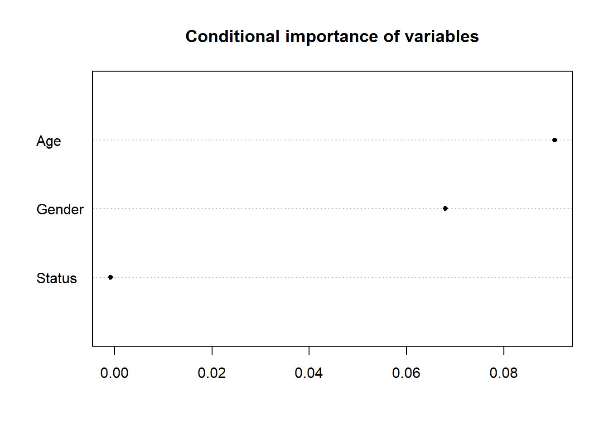
# load library
library(Hmisc)
# evaluate random forst
like.rf.pred <- unlist(treeresponse(like.rf))[c(FALSE,TRUE)]
somers2(like.rf.pred, as.numeric(rfd$LikeUser) - 1)## C Dxy n Missing
## 0.8059768 0.6119536 251.0000000 0.00000002.4 Random Forests in R: Really?
# load library
library(party)
cf1 <- cforest(LikeUser ~ . , data= rfd, control=cforest_unbiased(mtry=2,ntree=100)) # fit the random forest
varimp(cf1) # get variable importance, based on mean decrease in accuracy## Age Gender Status
## 0.125543478 0.065652174 0.001304348# conditional=True, adjusts for correlations between predict
varimp(cf1, conditional=TRUE) ## Age Gender Status
## 0.09543478 0.05934783 -0.00326087varimpAUC(cf1) # more robust towards class imbalance.## Age Gender Status
## 0.14008569 0.06914335 0.03530152par(mar = c(5, 8, 4, 2) + 0.1)
plot(y = 1:length(varimpAUC(cf1)), x = varimpAUC(cf1)[order(varimpAUC(cf1))],
axes = F, ann = F, pch = 20, xlim = c(-0.01, 0.2), main = "Predictor Importance")
axis(1, at = seq(-0.01, 0.2, 0.05), seq(-0.01, 0.2, 0.05))
axis(2, at = 1:length(varimpAUC(cf1)), names(varimpAUC(cf1))[order(varimpAUC(cf1))], las = 2)
grid()
box()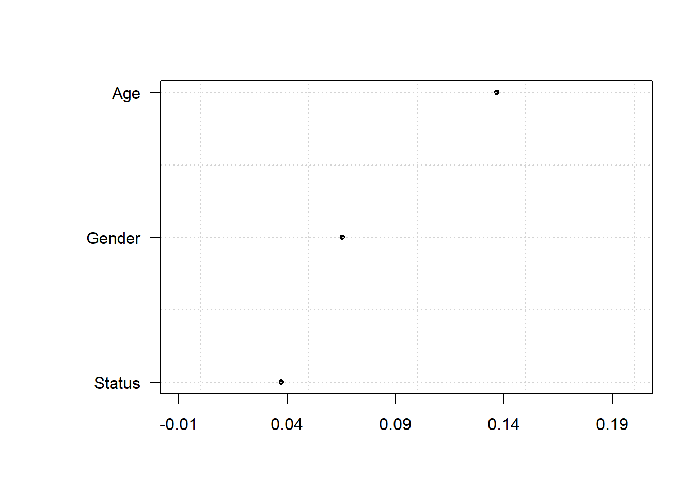
par(mar = c(5, 4, 4, 2) + 0.1)3 Boruta
Boruta (Kursa & Rudnicki 2010, 2018) is a variable selection procedure and it represents an extension of random forest analyses (cf. Breiman 2001; Tagliamonte & Baayen 2012). The name “Boruta” is derived from a demon in Slavic mythology who dwelled in pine forests. Boruta is an alternative to regression modelling that is better equipped to handle small data sets because it uses a distributional approach during which hundreds of (random) forests are grown from permutated data sets. This means that Boruta outperforms random forest analyses because it does not provide merely a single value for each predictor but a distribution of values leading to higher reliability.
The Boruta analysis consists out of five steps.
In a first step, the Boruta algorithm copies the data set and adds randomness to the data by (re-)shuffling data points and thereby creating randomized variables. These randomized variables are referred to as shadow features.
Secondly, a random forest classifier is trained on the extended data set.
In a third step, a feature importance measure (Mean Decrease Accuracy represented by z-scores) is calculated to determine the relative importance of all predictors (both original or real variables and the randomized shadow features).
In the next step, it is checked at each iteration of the process whether a real predictor has a higher importance compared with the best shadow feature. The algorithm keeps track of the performance of the original variables by storing whether they outperformed the best shadow feature or not in a vector.
In the fifth step, predictors that did not outperform the best shadow feature are removed and the process continues without them. After a set number of iterations, or if all the variables have been either confirmed as outperforming the best shadow feature, the algorithm stops.
Despite its obvious advantages of Boruta over random forest analyses and regression modelling, it can neither handle multicollinearity not hierarchical data structures where data points are nested or grouped by a given predictor (as is the case in the present analysis as data points are grouped by adjective type). As Boruta is a variable selection procedure, it is also limited in the sense that it provides information on which predictors to include and how good these predictors are (compared to the shadow variables) while it is neither able to take hierarchical data structure into account, nor does it provide information about how one level of a factor compares to other factors. In other words, Boruta shows that a predictor is relevant and how strong it is but it does not provide information on how the likelihood of an outcome being used differs between variable levels, for instance between men and women.
4 Boruta in R
We begin by preparing the session. In a first step, we load the necessary library and the data.
#install.packages(Boruta) # install Boruta library (remove # to activate)
library(Boruta) # activate Boruta library
options(stringsAsFactors = T) # set options: do not convert strings
options(scipen = 999) # set options: supress math. notation
options(max.prAmplified=10000) # set options
# load data
borutadata <- read.delim("data/treedata.txt", header = T, sep = "\t")
head(borutadata)## Age Gender Status LikeUser
## 1 15-40 female high no
## 2 15-40 female high no
## 3 15-40 male high no
## 4 41-80 female low yes
## 5 41-80 male high no
## 6 41-80 male low noNow that we have loaded the data, we will start our initial analysis.
# initial run
boruta1 <- Boruta(LikeUser~.,data=borutadata)
print(boruta1)## Boruta performed 9 iterations in 0.3752592 secs.
## 3 attributes confirmed important: Age, Gender, Status;
## No attributes deemed unimportant.getConfirmedFormula(boruta1)## LikeUser ~ Age + Gender + Status
## <environment: 0x0000000034774638>plot(boruta1, cex = .5)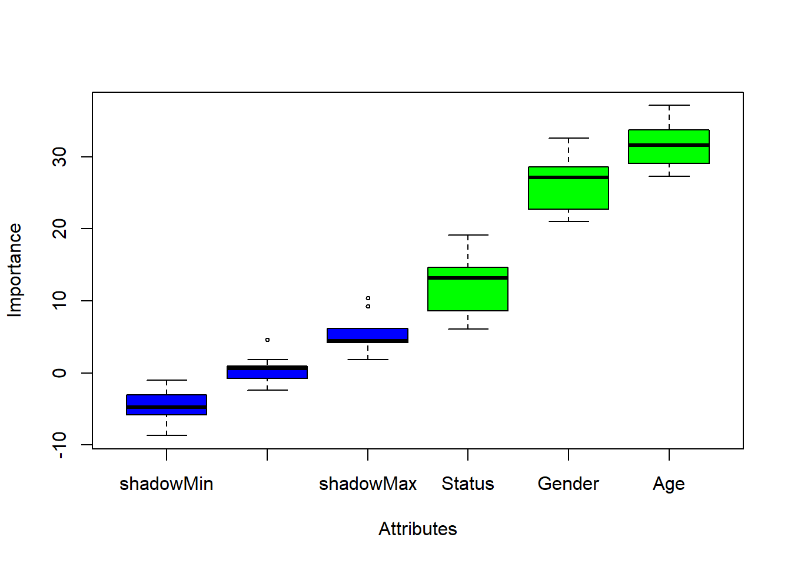
We now have a look at the importance history to see if any variables can be removed from the analysis.
plotImpHistory(boruta1)After inspecting the importance history, we see that our predictors performed consistently better than chance and the Boruta parameters tehrefore do not need to be modified and we also do not need to remove insignificant variables which do not consistently perform better than the shadow variable. If perdictors do perform worse than the best shadow variable, then these variables should be excludde and the Boruta analysis should be re-run on the dataset that does no longer contain the superfluous variable.
Now, we print the confirmed formular to check which predictors should be included in the model.
getConfirmedFormula(boruta1)## LikeUser ~ Age + Gender + Status
## <environment: 0x000000003db9aaf8>As a last step, we customize the results plot of the Boruta analysis.
par(mar = c(8, 8, 4, 2) + 0.1)
plot(boruta1, cex.axis=.75, las=2, xlab="", ylab = "", cex = .75,
col = c("grey50", "grey50", "grey50","grey90","grey90","grey90"))
abline(v = 3.5, lty = "dashed")
mtext("Predictors", 1, line = 6, at = 5, cex = 1)
mtext("Control", 1, line = 6, at = 2, cex = 1)
mtext("Importance", 2, line = 2.5, at = 20, cex = 1, las = 0)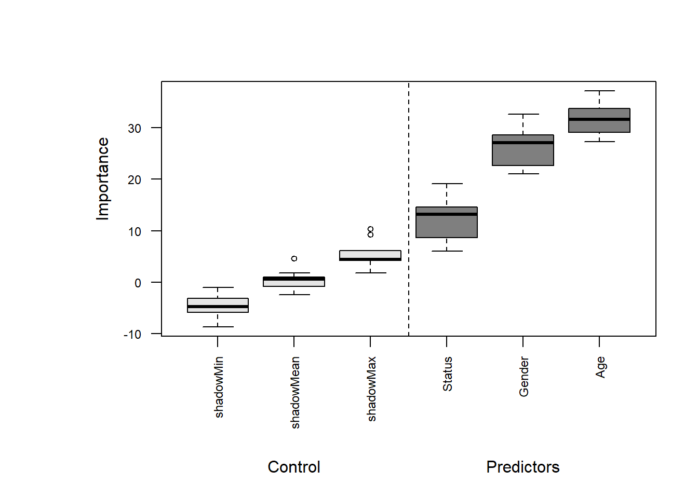
par(mar = c(5, 4, 4, 2) + 0.1)